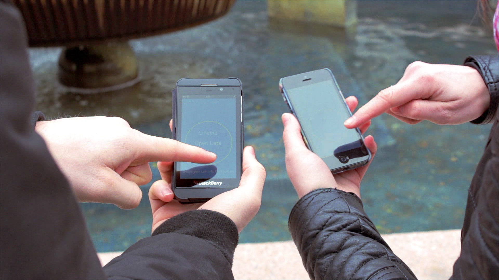

Infowish
A screen-based experience assuming future technologies
ux | ui | motion
Watch the concept video here.
Our concept was to offer something to groups who are visiting Dundee Square.
Individually, we observed the environment and the commuters who were engaging with the square. The square is a large area, with shopfronts such as a travel agents and many council buildings, one of which is an information centre. It was noted, that most of Dundee’s patrons took no notice of the square and used it only as a shortcut to access other parts of the city centre. Those that were engaging with the square were primarily surrounding the landmark fountains and tossing coins.
We also gathered stories from groups around the city, who may have used the square, and more specifically the fountains. We gathered this information and created user profiles.

Concentrating on the interactions we observed with the fountains, ‘making a wish’ was a broad direction we aimed for. This offered an opportunity to develop a pre-existing pastime in Dundee and make it a digital experience, assuming future technologies.
A group would approach the fountain, and individually connect with their smartphone. They can enter ‘keywords’ that tell Infowish what they desire. AFter each member of the group has entered their desies and 'tossed' their digital coin, Infowish will feedback suggestions on how to spend their day.
We designed the journey to have as few steps as possible before receiving the suggestion from the fountain. As it is a group activity, we found it to be important, that each user was to understand the result of another users engagement. Our solution was to appoint each participants choices onto a digital coin, that could then be flicked and visualised within the fountain. These would then merge into one larger coin before displaying a suggestion.
We built a scale model of the fountain out of cardboard and aluminium rods. This was, at the time, a comical approach, yet it offered an excellent environment for prototyping.

I mocked up initial wireframes of each page of the journey. This gave us a start to prototyping the entire experience. After some refinements, the wireframes were given a low-res GUI. This made it clearer for user testing.

We had these printed and cut to size (iPhone 4 size, to be exact). Potential groups of users came to prototype the experience and their behaviours were observed. We made several changes to the UI and simplified the journey even further. We removed unneeded functionality such as the option to select a previously suggested activity.